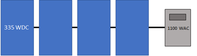
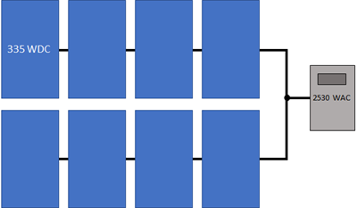
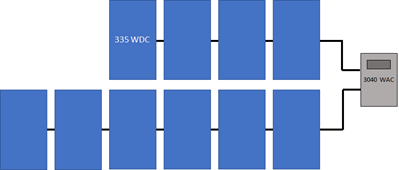
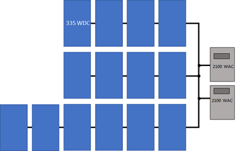
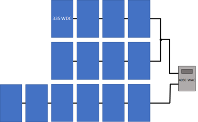
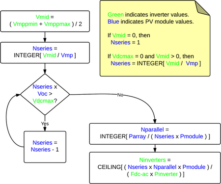

PV Sizing Instructions#
To size the system for the Detailed Photovoltaic model, you choose a module and inverter, and then specify the number of modules in a string, and number of strings in the array. You can also divide the array into sections called subarrays to model an array with modules oriented in different directions, or that use different tracking options.
Note
You can use the simpler PVWatts model instead of the Detailed Photovoltaic model to size the system without specifying numbers of inverters, modules per string, and strings in parallel.
Sizing the System in the Detailed Photovoltaic Model#
SAM provides two options on the System Size page for specifying the numbers of modules and inverters in the PV system:
The best way is to specify the number of modules and inverters yourself.
If you are modeling a system with one subarray, you can check Specify desired size and DC/AC ratio, and see what values SAM calculates for the number modules per string and number of strings in parallel.
For information about how SAM models inverter clipping losses, see Inverter Clipping Loss. You can run the System Sizing macro to generate a detailed report about clipping losses and the inverter’s MPPT performance.
The following examples show how to design common system configurations in SAM. The examples show a few modules for a small system for clarity, but the same approach can be used for large systems with thousands of modules and multiple inverters. See Microinverters for a microinverter configuration example.
Example 1: One string, one inverter, one MPPT#

Number of MPPT inputs |
1 |
|---|---|
Number of inverters |
1 |
Modules per string in subarray 1 |
4 |
Strings in parallel in subarray 1 |
1 |
Example 2: Two identical strings, one inverter, one MPPT#

Number of MPPT inputs |
1 |
|---|---|
Number of inverters |
1 |
Modules per string in subarray 1 |
4 |
Strings in parallel in subarray 1 |
2 |
Example 3: Two different strings, one inverter, one MPPT#
Number of MPPT inputs |
1 |
|---|---|
Number of inverters |
1 |
Modules per string in subarray 1 |
4 |
Strings in parallel in subarray 1 |
6 |
Example 4: Two different strings, one inverter, two MPPTs#

Number of MPPT inputs |
2 |
|---|---|
Number of inverters |
1 |
Modules per string in subarray 1 |
4 |
Strings in parallel in subarray 1 |
6 |
Inverter MPPT input for subarray 1 |
1 |
Inverter MPPT input for subarray 2 |
2 |
Example 5: Three strings (two identical), two inverters, one MPPT#

Number of MPPT inputs |
1 |
|---|---|
Number of inverters |
2 |
Modules per string in subarray 1 |
4 |
Strings in parallel in subarray 1 |
2 |
Modules per string in subarray 2 |
6 |
Strings in parallel in subarray 2 |
1 |
Example 6: Three strings (two identical), one inverter, two MPPTs#

Number of MPPT inputs |
2 |
|---|---|
Number of inverters |
1 |
Modules per string in subarray 1 |
4 |
Strings in parallel in subarray 1 |
2 |
Modules per string in subarray 2 |
6 |
Strings in parallel in subarray 2 |
1 |
Specify Numbers of Modules and Inverters#
The following examples show how to specify the number of modules and inverters by hand.
Basic Example#
This basic example shows the steps to configure strings for a 10 MW system consisting of two subarrays of 14,500 SunPower 305 Wdc modules with different azimuth angles, and two Power Electronics 330 kWac inverters for a total size of 8.9 MWdc and a DC to AC ratio of 1.35.
Basic example steps:
On the Module page, type “sunpower” in the Filter box above the list mof modules, and choose the SPT-305-Mono or a similar module from the list.
Clear the Module is bifacial box if the module is not a bifacial module.
On the Inverter page, type “power” in the Filter box, and choose FS3190K or a similar inverter.
On the System Size page, choose Specify number of modules and inverters. It is not possible for SAM to automatically size a system with more than one subarray.
For Number of inverters, type 2.
Under Subarrays and String Size, for Subarray 1, specify 29 modules per string and 500 strings in parallel.
Enable Subarray 2, and specify 29 modules per string and 500 strings in parallel for Subarray 2. Note the nameplate DC capacity and DC to AC ratio in the blue boxes under System Size. The blue boxes are calculated values that you can use that the system size is correct.
On the Tracking Layout Land page, under Tracking and Orientation, set Aximuth angle (deg) to 180 degrees for Subarray 1 and 170 degrees for Subarray 2.
Detailed Example#
This detailed example demonstrates one approach for choosing optimal values for the numbers of modules and inverters based on the array’s expected DC output instead of its nameplate capacity. Before you start choose a system size in kWdc and a DC to AC ratio for the system.
Note
You can use the System Sizing macro to generate a report that you can use to compare the system’s operating characteristics to design values, and generate a list of alternative modules that might work with the inverter you chose.
Detailed example steps:
Choose an inverter for the system or specify its parameters on the Inverter page. (For microinverters, see Modeling Microinverters.). If you do not have a specific inverter in mind, either choose one with a rated maximum DC power close to the array size you want to model, or choose one with a maximum AC power that is your desired array DC capacity divided by your desired DC to AC ratio.
Choose a module or specify its parameters on the Module page. If you do not have a specific module in mind, use the default module.
On the System Size page, under System Size, for Number of Inverters, type 1. For a large system that requires more than one inverter, use this equation to calculate the number of inverters (round the answer to the nearest integer):
Number of Inverters = ( Nameplate DC Capacity (kWdc) ÷ DC to AC Ratio ) ÷ Inverter Maximum AC Power (kWac)
Under Subarrays and String Size, for Subarray 1, type a value for Modules per string in subarray that results in a string open circuit voltage (String Voc) less than but as close as possible to the inverter’s maximum MPPT voltage, and greater than the inverter’s minimum MPPT voltage. For an initial estimate, you can try an integer value less than:
Modules per String = [ ( Minimum MPPT Voltage + Maximum MPPT Voltage ) ÷ 2 ] ÷ Module Maximum Power Voltage
If the resulting string open circuit DC voltage (String Voc at reference conditions) is greater than the inverter’s maximum MPPT voltage, reduce the number of modules per string. You may also want to try a similar module or inverter with slightly lower or higher maximum power.
For Strings in parallel in subarray, type a value that results in an array nameplate capacity that is close to your system’s DC capacity. Choose an integer value close to the value of:
Strings in Parallel = Nameplate DC Capacity (kWdc) × 1000 (W/kW) ÷ Module Maximum Power (Wdc) ÷ Modules Per String
Depending on the inverter you chose, you may need to modify the number of inverters to match the array size.
Number of Inverters = ( Modules per String × Strings in Parallel × Module Maximum Power (Wdc) ) ÷ ( DC-to-AC Ratio × Inverter Maximum AC Power (Wac) )
You may need to experiment with different sizes of modules and inverters within the same family to find a combination that works for your system.
On the Tracking Layout Land page, under Tracking & Orientation, specify the tilt angle, tracking option, and azimuth angle as appropriate, or use the default values.
Under Row Dimensions and Spacing, specify a ground coverage ratio (GCR) as appropriate, or use the default value.
On the Electrical Losses page, specify any losses.
Run a simulation. See below for details about any simulation notices.
On the Results page, check the energy yield (kWh/kW) in the Metrics table to make sure it is a reasonable value. (For example, the energy yield for the default system based on mono-crystalline modules in Phoenix, Arizona is about 2,300 kWh/kW.)
If it seems too low, check that the total inverter capacity is not too low and limiting the system’s AC output. If it is, you may want to try using a larger inverter, fewer modules, or a module from the same family with slightly lower capacity.
Also on the Results page, click the Time Series tab.
Display the Hourly Energy variable. This is the system’s AC output in kWh/h. You can use this information to decide whether to reduce the inverter capacity. For example if you specified a 400 kW inverter capacity, but the time series data indicates the system rarely operates at that level, you could try reducing the number of inverters to model a system with 315 kW of inverter capacity to reduce the system’s installation cost.
Display the Subarray 1 open circuit voltage and operating voltage variables. You can use these to verify that the array voltage does not exceed your design voltage limits.
Adjust the numbers of inverters, modules per string, and strings in parallel, and run more simulations until you are satisfied with the cost and performance of the system.
Specify Desired Size and DC/AC Ratio#
This option is appropriate for very preliminary analyses to get a rough idea of a system’s annual output, or as a first step in determining the number of modules per string, strings in parallel, and number of inverters for your system.
Note
SAM’s array sizing calculator works best for systems with a nameplate DC capacities of greater than about 20 kW. In only works for systems with one subarray (Subarray 1).
The array sizing calculator estimates the number of modules and inverters required for the array size and DC to AC ratio that you specify. It uses the nominal specifications of the modules and inverters from the Module and Inverter pages to calculate values for the numbers of modules per string, strings in parallel, and inverters. Because SAM makes the calculation before running a simulation, it has no information about the expected output of the array for these calculations. However, SAM does display notices based on the expected output of the photovoltaic array and inverter that you can use to refine the array size.
To size the photovoltaic array with the array sizing calculator:
Choose an inverter or specify its parameters on the Inverter page. (For microinverters, see Modeling Microinverters.)
Choose a module or specify its parameters on the Module page.
On the System Size page, under System Size, choose Specify desired size and DC/AC ratio.
For Desired array size, type the array DC capacity value in DC kilowatts.
For Desired DC to AC ratio, type the ratio of DC array capacity to AC inverter capacity.
SAM calculates and displays values for Modules per String, Strings in Parallel, and Number of Inverters
Verify that the calculated values in blue boxes for Nameplate DC capacity, DC to AC ratio, and Total AC Capacity acceptably close to the desired values, and check the sizing messages for any information to help you adjust your assumptions.
If the capacity is not as close to the desired value, you can try choosing a slightly smaller or larger module or inverter to get closer to the desired capacity. Because these capacity values are based on a multiple of the module and inverter capacities, SAM will probably not be able to suggest a system with your exact nameplate capacity value.
If the values for the inverter maximum DC voltage, or inverter minimum MPPT voltage and maximum MPPT voltage are zero, see the note below.
On the Tracking Layout Land page, under Tracking & Orientation, choose options to specify the module tracking, orientation.
Under Row Dimensions and Spacing, type a value for the ground coverage ratio (GCR) as applicable.
On the Electrical Losses page, specify any DC or AC losses. You can use default values if you do not have specific loss values for your system design.
PV Array Sizing Calculator Algorithm#
The array sizing calculator uses the following algorithm to determine the number of modules and inverters in the array:
Choose an initial number of modules per string that results in a string maximum power voltage close to the midpoint between the inverter minimum MPPT voltage and maximum MPPT voltage.
If the resulting string open circuit voltage exceeds the inverter maximum DC input voltage, reduce the number of modules per string by one until the string voltage is less than the inverter limit.
Calculate the number of strings in parallel required to meet the desired array capacity.
Calculate the number of inverters required to meet the DC to AC ratio you specify.
The algorithm uses the following rules to size the array:
The string open circuit voltage (Voc) is less than the inverter’s maximum DC voltage.
The ratio of the array’s nameplate capacity in DC kW to the inverter total capacity in AC kW is close to the DC to AC ratio that you specify.

Where
Vdcmax |
Inverter maximum DC voltage |
Vmppmin |
Inverter minimum MPPT voltage |
Vmppmax |
Inverter maximum MPPT voltage |
Vmid |
Midpoint between inverter minimum and maximum MPPT voltages |
Pinverter |
Inverter maximum AC power |
Fdc-ac |
DC-to-AC ratio |
Voc |
String open circuit voltage |
Vmp |
String maximum power voltage |
Pmodule |
Module maximum DC power |
Nseries |
Number of modules in series |
Nparallel |
Number of strings in parallel |